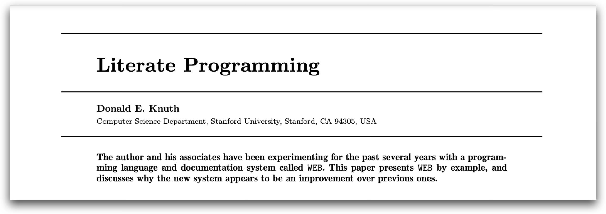
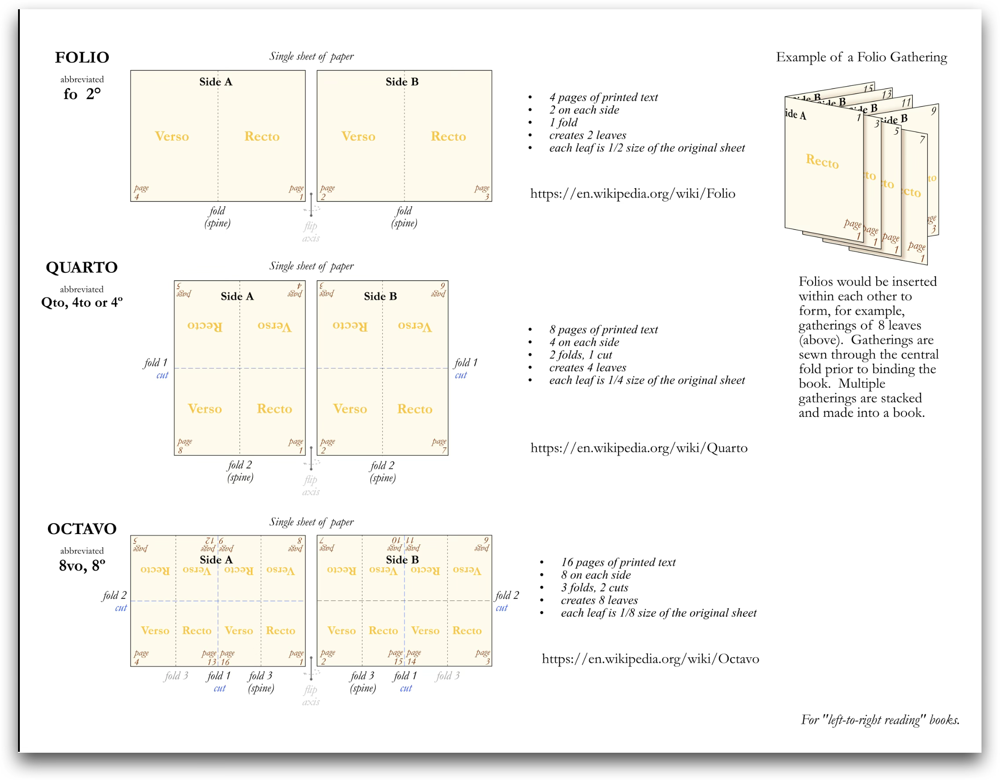
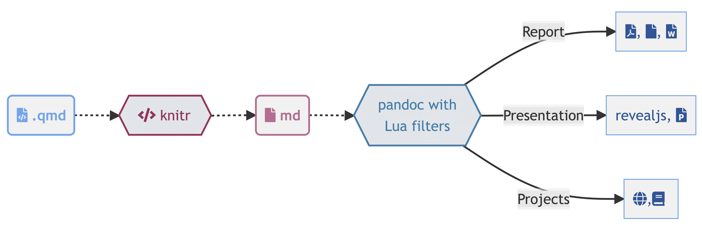

Using computational tools in pharmacometric reporting
Author
Mutaz Jaber, PharmD, PhD
Published
April 2, 2026
The Pharmacometric Analysis Lifecycle
A general workflow in your analysis and working project can follow a cycle:
Study Design → Data Assembly → Modeling → Simulation → [Reporting] → Publication → Review
Your audience: reviewers, collaborators, committees only sees the final document. Everything else is invisible
NoteReality of pharmacometric/quantitative analysis projects
The report is the bridge between your analysis and the people who evaluate it.
Formating Tables, Figures and listings are usually under-estimated.
What is your usual way of moving from model to document ready for review?
The Reporting Reality
Most quantitatve/PMx reporting follows a fragmented pipeline with manual handoffs at every step. A disproportionate fraction of project time goes to report assembly rather than modeling.
Think about it: extracting parameters from NONMEM output, formatting tables in Excel, copying figures into Word, manually numbering cross-references, reconciling file versions across team members.
Discussion: What does your current workflow from NONMEM to final report look like?
Judge by Document Quality
Your readers, whether journal reviewers, thesis committees, or regulators, evaluate your science through the document.
✓
Consistent table formatting
Clear figure provenance
Traceable analysis trail (reproducability)
Correct cross-references
✗
Mismatched run numbers in text vs. appendix
Wrong study labels on figures
Tables that don’t reconcile
Orphaned references
Tables Are the Backbone
Tables are the backbone of every pharmacometrics report — and the most time-consuming to get right. Example Table 1:
Table 1: Example PopPK parameter estimates table
Parameter
Estimate
RSE (%)
Bootstrap Median (95% CI)
CL (L/h)
12.4
8.2
12.1 (10.5, 14.8)
Vc (L)
45.6
11.3
44.9 (38.2, 53.1)
Vp (L)
23.1
15.7
22.8 (17.4, 30.2)
Q (L/h)
3.45
22.1
3.38 (2.11, 5.62)
Ka (1/h)
0.87
18.4
0.85 (0.58, 1.24)
CL ~ WT
0.75
25.3
0.73 (0.48, 1.02)
IIV CL (%CV)
32.4
12.8
31.9 (26.1, 38.7)
Prop. res. (%)
18.2
6.1
18.0 (16.4, 20.1)
Manual approach: reformat every table by hand after each model update. automated approach: code generates the table — always current, always consistent.
Literate Programming
“Let us change our traditional attitude to the construction of programs: instead of imagining that our main task is to instruct a computer what to do, let us concentrate rather on explaining to human beings what we want a computer to do.”
— Donald Knuth, 1984
Literate programming is a methodology that combines a programming language with a documentation language, thereby making programs more robust, more portable, more easily maintained, and arguably more fun to write than programs that are written only in a high-level language.

Litreate Programming
Year
Tool
Idea
1984
Knuth’s WEB
Interleave documentation and code in one file
2022
Quarto
Language-agnostic, multi-format, built for publishing
Note
Beyond documentation, literate programming offers benefits in education, research, and various technical domains. Examples?
Hello, Quarto!
(a) Shakespeare’s Midsummer Night’s Dream, 1600, from the Folger Shakespeare Library

(b) The really Quarto
Figure 1: History
What is Quarto?
It is an open-source scientific and technical publishing system https://quarto.org
You can weave together narrative and code to produce elegantly formatted output such as documents, web pages, blog posts, books, dashboards, and more
Why Quarto?
Multilingual and independent of computational systems
Quarto comes “batteries included” straight out of the box
Consistent expression for core features
Extension system
Enable “single-source publishing” — create Word, PDFs, HTML, etc. from one source Use defaults that meet accessibility guidelines
The Mechanistic Model (under the hood)

Quarto ecosystem
The goal of Quarto is to make the process of creating and collaborating on scientific and technical documents dramatically better. Quarto combines the functionality of R Markdown, bookdown, distill, xaringian, etc into a single consistent system with “batteries included” that reflects everything we’ve learned from R Markdown over the past 10 years.
How it works?
Quarto is a command line (CLI) interface!
Quarto is a command line interface (CLI) that renders plain text formats into human readable/shareable formats4
quarto--help
Usage: quarto
Version: 1.8.24
Description:
Quarto CLI
Options:
-h, --help - Show this help.
-V, --version - Show the version number for this program.
Commands:
render [input] [args...] - Render files or projects to various document types.
preview [file] [args...] - Render and preview a document or website project.
serve [input] - Serve a Shiny interactive document.
create [type] [commands...] - Create a Quarto project or extension
use <type> [target] - Automate document or project setup tasks.
add <extension> - Add an extension to this folder or project
update [target...] - Updates an extension or global dependency.
remove [target...] - Removes an extension.
convert <input> - Convert documents to alternate representations.
pandoc [args...] - Run the version of Pandoc embedded within Quarto.
typst [args...] - Run the version of Typst embedded within Quarto.
run [script] [args...] - Run a TypeScript, R, Python, or Lua script.
list <type> - Lists an extension or global dependency.
install [target...] - Installs a global dependency (TinyTex or Chromium).
uninstall [tool] - Removes an extension.
tools - Display the status of Quarto installed dependencies
publish [provider] [path] - Publish a document or project to a provider.
check [target] - Verify correct functioning of Quarto installation.
call - Access functions of Quarto subsystems such as its rendering engines.
help [command] - Show this help or the help of a sub-command.
Basic Usage: document anatomy
Three main component of every Quarto document:
YAML: Defining the metadata
Text/Figures/Tables: Your input
Code chunks
YAML: An overview
The YAML Header is marked by the three dashes ---
The general principle is to have: the name of a data item (a key), followed by a colon, a space, and then the data item’s value. A key-value pair in the format key: value.
Each line in YAML is a new item.
Dashes (-) represent individual items in a list.
Note that indentations matter in YAML!!
YAML can be used to specify the global settings for your document (i.e. figure caption location, citation method, code folding, etc.).
You can use the tab key to see what options are available
title:"Your HTML"author: Add Your Name Heredate:"November 4, 2023"format: htmlcap-location: topfig-format: png
Markdown is a lightweight language for creating formatted text Quarto is based on Pandoc and uses its variation of markdown as its underlying document syntax
Model updated? Change run number and yaml -> quarto render. Done!
External tables are pre-built (e.tex files that you include directly): useful when the table is generated by a separate pipeline or shared across reports.
NoteWhen to use which
Internal tables keep everything self-contained — the table updates every time you render. External tables give you flexibility when the source lives outside the document or comes from a validated process. Most reports use a mix of both.
Extensions and Templates
Quarto Extensions are a powerful way to modify and extend the behavior of Quarto.
With an extension, you define your formatting once: fonts, margins, headers, page layout — and every document that uses it gets the same consistent look.
There are extensions for journal articles, regulatory submissions, theses, and conference posters. You can also build your own for your lab or organization.